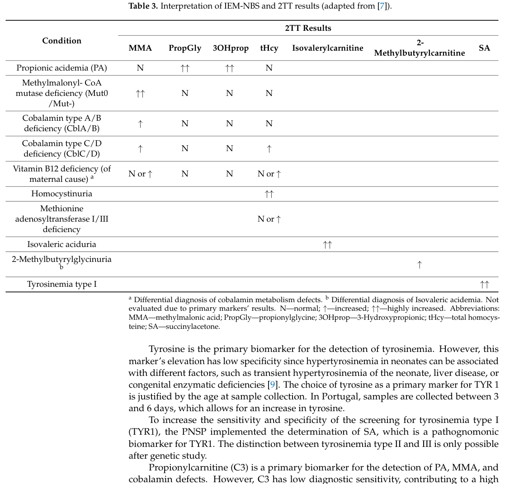

Inborn disorders of cobalamin (vitamin B12) metabolism and transport are a genetically heterogeneous group of autosomal recessive inherited metabolic diseases that disrupt the intestinal absorption, plasma transport, cellular uptake, or intracellular processing of cobalamin. Cobalamin is the obligate cofactor for two enzymes: cytosolic methionine synthase (MTR), which uses methylcobalamin to remethylate homocysteine to methionine, and mitochondrial methylmalonyl-CoA mutase (MMUT), which uses adenosylcobalamin to convert L-methylmalonyl-CoA to succinyl-CoA. Defects are classified by complementation group: cblC (MMACHC, the most common), cblA (MMAA), cblB (MMAB), cblD (MMADHC), cblE (MTRR), cblF (LMBRD1), cblG (MTR), cblJ (ABCD4), and transcobalamin II deficiency (TCN2). Depending on which cofactor branch is affected, patients develop isolated methylmalonic acidemia (cblA, cblB), isolated homocystinuria with megaloblastic anemia (cblE, cblG), or combined methylmalonic acidemia and homocystinuria (cblC, cblD, cblF, cblJ). Clinical manifestations span failure to thrive, megaloblastic anemia, neurocognitive impairment, seizures, thromboembolism, and ocular disease, with onset ranging from the neonatal period to adulthood. Treatment centers on hydroxocobalamin, betaine, and dietary management.
Ask a research question about Inborn Disorder of Cobalamin Metabolism and Transport. OpenScientist will conduct autonomous deep research using the Disorder Mechanisms Knowledge Base and PubMed literature (typically 10-30 minutes).
Do not include personal health information in your question. Questions and results are cached in your browser's local storage.
name: Inborn Disorder of Cobalamin Metabolism and Transport
category: Mendelian
creation_date: '2026-06-17T00:00:00Z'
synonyms:
- Inborn error of cobalamin metabolism
- Cobalamin metabolism defect
- Inherited vitamin B12 metabolic disorder
- Inborn vitamin B12 deficiency
description: >-
Inborn disorders of cobalamin (vitamin B12) metabolism and transport are a genetically
heterogeneous group of autosomal recessive inherited metabolic diseases that disrupt the
intestinal absorption, plasma transport, cellular uptake, or intracellular processing of
cobalamin. Cobalamin is the obligate cofactor for two enzymes: cytosolic methionine synthase
(MTR), which uses methylcobalamin to remethylate homocysteine to methionine, and
mitochondrial methylmalonyl-CoA mutase (MMUT), which uses adenosylcobalamin to convert
L-methylmalonyl-CoA to succinyl-CoA. Defects are classified by complementation group: cblC
(MMACHC, the most common), cblA (MMAA), cblB (MMAB), cblD (MMADHC), cblE (MTRR), cblF
(LMBRD1), cblG (MTR), cblJ (ABCD4), and transcobalamin II deficiency (TCN2). Depending on
which cofactor branch is affected, patients develop isolated methylmalonic acidemia (cblA,
cblB), isolated homocystinuria with megaloblastic anemia (cblE, cblG), or combined
methylmalonic acidemia and homocystinuria (cblC, cblD, cblF, cblJ). Clinical manifestations
span failure to thrive, megaloblastic anemia, neurocognitive impairment, seizures,
thromboembolism, and ocular disease, with onset ranging from the neonatal period to
adulthood. Treatment centers on hydroxocobalamin, betaine, and dietary management.
disease_term:
preferred_term: inborn disorder of cobalamin metabolism and transport
term:
id: MONDO:0019220
label: inborn disorder of cobalamin metabolism and transport
parents:
- Inborn Error of Metabolism
- Organic Acidemia
references:
- reference: PMID:20301503
title: "Disorders of Intracellular Cobalamin Metabolism."
tags:
- GeneReviews
has_subtypes:
- name: cblC
display_name: cblC type (MMACHC deficiency)
description: >-
Most common inborn error of intracellular cobalamin metabolism, caused by biallelic MMACHC
variants. Impairs synthesis of both methylcobalamin and adenosylcobalamin, producing combined
methylmalonic acidemia and homocystinuria.
evidence:
- reference: PMID:20301503
reference_title: "Disorders of Intracellular Cobalamin Metabolism."
supports: SUPPORT
evidence_source: HUMAN_CLINICAL
snippet: "The prototype and best understood phenotype is cblC; it is also the most common of these disorders."
explanation: GeneReviews identifies cblC as the prototype and most common intracellular cobalamin disorder.
- name: cblA
display_name: cblA type (MMAA deficiency)
description: >-
MMAA defect impairing mitochondrial adenosylcobalamin handling, producing isolated,
often vitamin B12-responsive, methylmalonic acidemia.
- name: cblB
display_name: cblB type (MMAB deficiency)
description: >-
MMAB (cob(I)alamin adenosyltransferase) defect impairing adenosylcobalamin synthesis,
producing isolated methylmalonic acidemia.
- name: cblD
display_name: cblD type (MMADHC deficiency)
description: >-
MMADHC defect that, depending on the variant position, produces isolated methylmalonic
acidemia, isolated homocystinuria, or combined disease.
- name: cblE
display_name: cblE type (MTRR deficiency)
description: >-
Methionine synthase reductase (MTRR) defect impairing reductive reactivation of methionine
synthase, producing isolated homocystinuria with megaloblastic anemia.
- name: cblF
display_name: cblF type (LMBRD1 deficiency)
description: >-
LMBRD1 defect impairing lysosomal export of cobalamin, producing combined methylmalonic
acidemia and homocystinuria.
- name: cblG
display_name: cblG type (MTR deficiency)
description: >-
Methionine synthase (MTR) defect impairing homocysteine remethylation, producing isolated
homocystinuria with megaloblastic anemia.
- name: cblJ
display_name: cblJ type (ABCD4 deficiency)
description: >-
ABCD4 defect impairing lysosomal cobalamin export, producing combined methylmalonic
acidemia and homocystinuria.
- name: TCN2 deficiency
display_name: Transcobalamin II deficiency (TCN2)
description: >-
Transcobalamin II deficiency impairing plasma transport and cellular delivery of cobalamin,
producing early infantile megaloblastic anemia, failure to thrive, and immunodeficiency.
- name: cblX
display_name: cblX type (HCFC1, X-linked)
description: >-
X-linked disorder caused by hemizygous HCFC1 variants (with cblX-like forms from THAP11 and
ZNF143) that downregulate MMACHC transcription, producing a cblC-like combined biochemical
phenotype with prominent intractable epilepsy and severe neurodevelopmental impairment. Unlike
the autosomal recessive complementation groups, cblX follows X-linked inheritance.
evidence:
- reference: PMID:20301503
reference_title: "Disorders of Intracellular Cobalamin Metabolism."
supports: SUPPORT
evidence_source: HUMAN_CLINICAL
snippet: "The disorder of intracellular cobalamin metabolism caused by pathogenic variants in HCFC1 is inherited in an X-linked manner."
explanation: GeneReviews documents the X-linked HCFC1 (cblX) form as distinct from the autosomal recessive groups.
pathophysiology:
- name: Defective cobalamin absorption, transport, and cellular uptake
description: >-
Genetic defects in transcobalamin II (TCN2) and the lysosomal cobalamin exporters LMBRD1
(cblF) and ABCD4 (cblJ) impair the delivery of dietary cobalamin from the bloodstream into
the cytosolic compartment where it is processed into active cofactors. Reduced cellular
cobalamin availability functionally starves the downstream cofactor-dependent enzymes.
genes:
- preferred_term: TCN2
term:
id: hgnc:11653
label: TCN2
- preferred_term: LMBRD1
term:
id: hgnc:23038
label: LMBRD1
- preferred_term: ABCD4
term:
id: hgnc:68
label: ABCD4
biological_processes:
- preferred_term: cobalamin transport
term:
id: GO:0015889
label: cobalamin transport
modifier: DECREASED
chemical_entities:
- preferred_term: cobalamin
term:
id: CHEBI:30411
label: cobalamin
modifier: DECREASED
downstream:
- target: Impaired intracellular cobalamin cofactor synthesis
description: >-
Reduced cellular cobalamin uptake limits the substrate available for conversion into
methylcobalamin and adenosylcobalamin.
causal_link_type: DIRECT
evidence:
- reference: PMID:39125597
reference_title: "Vitamin B(12) Metabolism: A Network of Multi-Protein Mediated Processes."
supports: SUPPORT
evidence_source: HUMAN_CLINICAL
snippet: "Beyond inadequate dietary intake, vitamin B12 deficiency might be caused by insufficient bioavailability, blood transport disruptions, or impaired cellular uptake and metabolism."
explanation: Supports defects of transport and cellular uptake as a mechanism producing functional cobalamin deficiency.
- name: Impaired intracellular cobalamin cofactor synthesis
description: >-
MMACHC (cblC) and MMADHC (cblD) process cytosolic cobalamin into a common intermediate that is
partitioned into cytosolic methylcobalamin and mitochondrial adenosylcobalamin. Biallelic
defects block synthesis of one or both active cofactor forms, the central convergent lesion of
intracellular cobalamin disorders.
genes:
- preferred_term: MMACHC
term:
id: hgnc:24525
label: MMACHC
- preferred_term: MMADHC
term:
id: hgnc:25221
label: MMADHC
biological_processes:
- preferred_term: cobalamin metabolic process
term:
id: GO:0009235
label: cobalamin metabolic process
modifier: ABNORMAL
chemical_entities:
- preferred_term: methylcobalamin
term:
id: CHEBI:28115
label: methylcobalamin
modifier: DECREASED
- preferred_term: adenosylcobalamin
term:
id: CHEBI:18408
label: cobamamide
modifier: DECREASED
downstream:
- target: Impaired methionine synthase activity and remethylation
description: >-
Loss of methylcobalamin deprives cytosolic methionine synthase of its essential cofactor.
causal_link_type: DIRECT
- target: Impaired methylmalonyl-CoA mutase activity and propionate catabolism
description: >-
Loss of adenosylcobalamin deprives mitochondrial methylmalonyl-CoA mutase of its essential
cofactor.
causal_link_type: DIRECT
evidence:
- reference: PMID:20301503
reference_title: "Disorders of Intracellular Cobalamin Metabolism."
supports: SUPPORT
evidence_source: HUMAN_CLINICAL
snippet: "MMACHC (cblC), MMADHC (cblD-combined and cblD-homocystinuria), MTRR (cblE), LMBRD1 (cblF), MTR (cblG), ABCD4 (cblJ)"
explanation: GeneReviews enumerates the complementation-group genes whose products process intracellular cobalamin into active cofactors.
- name: Impaired methionine synthase activity and remethylation
description: >-
Methionine synthase (MTR) requires methylcobalamin and is kept active by methionine synthase
reductase (MTRR). Defects in MTR (cblG), MTRR (cblE), or upstream methylcobalamin supply impair
remethylation of homocysteine to methionine, causing homocysteine accumulation and methionine
depletion, and trapping folate as 5-methyltetrahydrofolate (methylfolate trap).
genes:
- preferred_term: MTR
term:
id: hgnc:7468
label: MTR
- preferred_term: MTRR
term:
id: hgnc:7473
label: MTRR
biological_processes:
- preferred_term: homocysteine metabolic process
term:
id: GO:0050667
label: homocysteine metabolic process
modifier: ABNORMAL
- preferred_term: L-methionine metabolic process
term:
id: GO:0006555
label: L-methionine metabolic process
modifier: ABNORMAL
chemical_entities:
- preferred_term: homocysteine
term:
id: CHEBI:17230
label: homocysteine
modifier: INCREASED
- preferred_term: L-methionine
term:
id: CHEBI:16643
label: L-methionine
modifier: DECREASED
downstream:
- target: Multisystem injury from homocystinuria and methylmalonic acidemia
description: >-
Hyperhomocysteinemia and methionine depletion drive vascular, hematologic, and neurologic
injury.
causal_link_type: DIRECT
evidence:
- reference: PMID:42158251
reference_title: "Inherited disorders of cobalamin metabolism in childhood: biochemical and clinical perspectives."
supports: SUPPORT
evidence_source: HUMAN_CLINICAL
snippet: "The metabolic networks involve critical biochemical pathways affecting the methionine-homocysteine cycle, folate biosynthesis, and energy and lipid metabolism."
explanation: Supports impaired remethylation in the methionine-homocysteine cycle (with folate trapping) as a core mechanism.
- name: Impaired methylmalonyl-CoA mutase activity and propionate catabolism
description: >-
Methylmalonyl-CoA mutase (MMUT) requires adenosylcobalamin. The mitochondrial chaperones MMAA
(cblA) and adenosyltransferase MMAB (cblB) are required for adenosylcobalamin handling and
synthesis; their defects, or loss of upstream adenosylcobalamin supply, impair conversion of
L-methylmalonyl-CoA to succinyl-CoA, causing methylmalonic acid accumulation.
genes:
- preferred_term: MMAA
term:
id: hgnc:18871
label: MMAA
- preferred_term: MMAB
term:
id: hgnc:19331
label: MMAB
biological_processes:
- preferred_term: propionyl-CoA catabolic process
term:
id: GO:1902859
label: propionyl-CoA catabolic process
modifier: DECREASED
chemical_entities:
- preferred_term: methylmalonic acid
term:
id: CHEBI:30860
label: methylmalonic acid
modifier: INCREASED
downstream:
- target: Multisystem injury from homocystinuria and methylmalonic acidemia
description: >-
Methylmalonic acid and propionyl-CoA accumulation cause metabolic acidosis, mitochondrial
dysfunction, and end-organ injury.
causal_link_type: DIRECT
evidence:
- reference: PMID:18563633
reference_title: "Causes of and diagnostic approach to methylmalonic acidurias."
supports: SUPPORT
evidence_source: HUMAN_CLINICAL
snippet: "The cblA, cblB and the variant 2 form of cblD complementation groups are linked to processes unique to Ado-Cbl synthesis."
explanation: Supports the adenosylcobalamin-pathway (cblA/cblB) defects that impair methylmalonyl-CoA mutase, causing methylmalonic acid accumulation.
- name: Multisystem injury from homocystinuria and methylmalonic acidemia
description: >-
The biochemical end-products of the two impaired cofactor branches converge on multisystem
disease: hyperhomocysteinemia promotes endothelial injury and thromboembolism, methionine
deficiency and impaired methylation impair myelination and neurodevelopment, methylmalonic
acidemia causes metabolic decompensation and renal injury, and impaired one-carbon metabolism
produces megaloblastic anemia.
cell_types:
- preferred_term: neuron
term:
id: CL:0000540
label: neuron
- preferred_term: kidney proximal convoluted tubule epithelial cell
term:
id: CL:1000838
label: kidney proximal convoluted tubule epithelial cell
evidence:
- reference: PMID:42158251
reference_title: "Inherited disorders of cobalamin metabolism in childhood: biochemical and clinical perspectives."
supports: SUPPORT
evidence_source: HUMAN_CLINICAL
snippet: "The primary neurological insult is related to demyelination and axonal loss in both the central and peripheral nervous systems, leading to a spectrum of symptoms from peripheral neuropathy to severe myelopathy and neuropsychiatric decline."
explanation: Supports neuronal injury (demyelination and axonal loss) as a major downstream consequence of impaired cobalamin metabolism.
- reference: PMID:39390411
reference_title: "Late-onset renal TMA and tubular injury in cobalamin C disease: a report of three cases and literature review."
supports: SUPPORT
evidence_source: HUMAN_CLINICAL
snippet: "The most common histological change is thrombotic microangiopathy (TMA)."
explanation: Supports renal injury via thrombotic microangiopathy as a downstream multisystem manifestation.
phenotypes:
- category: Laboratory
name: Methylmalonic aciduria
description: >-
Elevated urinary methylmalonic acid reflecting impaired methylmalonyl-CoA mutase activity in
cblA, cblB, cblC, cblD, cblF, and cblJ defects.
phenotype_term:
preferred_term: Methylmalonic aciduria
term:
id: HP:0012120
label: Methylmalonic aciduria
evidence:
- reference: PMID:20301503
reference_title: "Disorders of Intracellular Cobalamin Metabolism."
supports: SUPPORT
evidence_source: HUMAN_CLINICAL
snippet: "Evaluation of the methylmalonic acid (MMA) level in urine and blood and plasma total homocysteine (tHcy) level are the mainstays of biochemical testing."
explanation: GeneReviews confirms methylmalonic acid as a core diagnostic biomarker of intracellular cobalamin disorders.
- category: Laboratory
name: Homocystinuria
description: >-
Elevated homocysteine excretion reflecting impaired remethylation in cblC, cblD, cblE, cblF,
cblG, and cblJ defects.
phenotype_term:
preferred_term: Homocystinuria
term:
id: HP:0002156
label: Homocystinuria
evidence:
- reference: PMID:39390411
reference_title: "Late-onset renal TMA and tubular injury in cobalamin C disease: a report of three cases and literature review."
supports: SUPPORT
evidence_source: HUMAN_CLINICAL
snippet: "cobalamin C disease (cblC), an inherited metabolic disorder, which presents as combined methylmalonic aciduria (MMA-uria) and hyperhomocysteinaemia in clinical."
explanation: Supports homocystinuria/hyperhomocysteinemia as a defining biochemical feature of combined cobalamin disorders.
- category: Laboratory
name: Hyperhomocysteinemia
description: Elevated plasma total homocysteine due to impaired remethylation.
phenotype_term:
preferred_term: Hyperhomocystinemia
term:
id: HP:0002160
label: Hyperhomocystinemia
- category: Laboratory
name: Hypomethioninemia
description: Low plasma methionine due to impaired remethylation of homocysteine.
phenotype_term:
preferred_term: Hypomethioninemia
term:
id: HP:0003658
label: Hypomethioninemia
- category: Hematologic
name: Megaloblastic anemia
description: >-
Megaloblastic anemia from impaired one-carbon metabolism, characteristic of remethylation
defects (cblE, cblG) and transcobalamin II deficiency.
phenotype_term:
preferred_term: Megaloblastic anemia
term:
id: HP:0001889
label: Megaloblastic anemia
evidence:
- reference: PMID:42158251
reference_title: "Inherited disorders of cobalamin metabolism in childhood: biochemical and clinical perspectives."
supports: SUPPORT
evidence_source: HUMAN_CLINICAL
snippet: "While classically associated with megaloblastic anemia, its neurological manifestations can be diverse, severe, and often precede hematological changes."
explanation: Supports megaloblastic anemia as a classic hematologic manifestation of cobalamin metabolic disorders.
- category: Neurologic
name: Intellectual disability
description: Cognitive impairment from neurometabolic injury.
phenotype_term:
preferred_term: Intellectual disability
term:
id: HP:0001249
label: Intellectual disability
- category: Neurologic
name: Seizures
description: Seizures occurring in the context of neurometabolic injury.
phenotype_term:
preferred_term: Seizure
term:
id: HP:0001250
label: Seizure
evidence:
- reference: PMID:20301503
reference_title: "Disorders of Intracellular Cobalamin Metabolism."
supports: SUPPORT
evidence_source: HUMAN_CLINICAL
snippet: "megaloblastic anemia), global developmental delay, encephalopathy, and neurologic signs such as hypotonia and seizures"
explanation: GeneReviews lists seizures among the neurologic signs of intracellular cobalamin disorders.
- category: Neurologic
name: Hypotonia
description: Decreased muscle tone, a frequent neurologic sign in infant/toddler-onset intracellular cobalamin disorders.
phenotype_term:
preferred_term: Hypotonia
term:
id: HP:0001252
label: Hypotonia
evidence:
- reference: PMID:20301503
reference_title: "Disorders of Intracellular Cobalamin Metabolism."
supports: SUPPORT
evidence_source: HUMAN_CLINICAL
snippet: "megaloblastic anemia), global developmental delay, encephalopathy, and neurologic signs such as hypotonia and seizures"
explanation: GeneReviews lists hypotonia among the neurologic signs of intracellular cobalamin disorders.
- category: Neurologic
name: Global developmental delay
description: Failure to meet developmental milestones, a core feature of symptomatic intracellular cobalamin disorders (especially cblC).
phenotype_term:
preferred_term: Global developmental delay
term:
id: HP:0001263
label: Global developmental delay
evidence:
- reference: PMID:20301503
reference_title: "Disorders of Intracellular Cobalamin Metabolism."
supports: SUPPORT
evidence_source: HUMAN_CLINICAL
snippet: "megaloblastic anemia), global developmental delay, encephalopathy, and neurologic signs such as hypotonia and seizures"
explanation: GeneReviews lists global developmental delay among the clinical characteristics of intracellular cobalamin disorders.
- category: Neurologic
name: Encephalopathy
description: Encephalopathy occurring in the context of neurometabolic decompensation.
phenotype_term:
preferred_term: Encephalopathy
term:
id: HP:0001298
label: Encephalopathy
evidence:
- reference: PMID:20301503
reference_title: "Disorders of Intracellular Cobalamin Metabolism."
supports: SUPPORT
evidence_source: HUMAN_CLINICAL
snippet: "megaloblastic anemia), global developmental delay, encephalopathy, and neurologic signs such as hypotonia and seizures"
explanation: GeneReviews lists encephalopathy among the clinical characteristics of intracellular cobalamin disorders.
- category: Constitutional
name: Failure to thrive
description: Poor growth and feeding difficulties, frequent in early-onset disease.
phenotype_term:
preferred_term: Failure to thrive
term:
id: HP:0001508
label: Failure to thrive
- category: Renal
name: Renal thrombotic microangiopathy
description: >-
Renal involvement in cobalamin C disease most commonly manifests as thrombotic microangiopathy
(hemolytic-uremic syndrome spectrum) with hematuria, proteinuria, and hypertension, including in
late-onset/adolescent presentations.
phenotype_term:
preferred_term: Renal thrombotic microangiopathy
term:
id: HP:0005575
label: Hemolytic-uremic syndrome
evidence:
- reference: PMID:39390411
reference_title: "Late-onset renal TMA and tubular injury in cobalamin C disease: a report of three cases and literature review."
supports: SUPPORT
evidence_source: HUMAN_CLINICAL
snippet: "The most common histological change is thrombotic microangiopathy (TMA)."
explanation: Supports renal thrombotic microangiopathy as the predominant renal lesion in cblC disease.
genetic:
- name: MMACHC (cblC)
gene_term:
preferred_term: MMACHC
term:
id: hgnc:24525
label: MMACHC
inheritance:
- name: Autosomal recessive
evidence:
- reference: PMID:20301503
reference_title: "Disorders of Intracellular Cobalamin Metabolism."
supports: SUPPORT
evidence_source: HUMAN_CLINICAL
snippet: "The majority of disorders of intracellular cobalamin metabolism are inherited in an autosomal recessive manner."
explanation: GeneReviews confirms autosomal recessive inheritance for the majority of intracellular cobalamin disorders.
variants:
- name: c.482G>A
description: >-
A common MMACHC missense variant associated with late-onset and milder cblC phenotypes,
better hydroxocobalamin response, and more favorable neurological outcomes; frequently
detected by newborn screening.
evidence:
- reference: PMID:38070096
reference_title: "Variable phenotypes and outcomes associated with the MMACHC c.482G > A mutation: follow-up in a large CblC disease cohort."
supports: SUPPORT
evidence_source: HUMAN_CLINICAL
snippet: "The c.482G > A variant in MMACHC is associated with late-onset and milder phenotypes of CblC disease."
explanation: Directly supports the genotype-phenotype correlation for the MMACHC c.482G>A variant.
treatments:
- name: Hydroxocobalamin therapy
description: >-
Parenteral hydroxocobalamin (vitamin B12) to maximize residual cofactor synthesis; the
cornerstone of treatment for most intracellular cobalamin disorders.
treatment_term:
preferred_term: Pharmacotherapy
term:
id: NCIT:C15986
label: Pharmacotherapy
therapeutic_agent:
- preferred_term: hydroxocobalamin
term:
id: CHEBI:27786
label: hydroxocobalamin
evidence:
- reference: PMID:39390411
reference_title: "Late-onset renal TMA and tubular injury in cobalamin C disease: a report of three cases and literature review."
supports: SUPPORT
evidence_source: HUMAN_CLINICAL
snippet: "Hydroxocobalamin, betaine, and L-carnitine were administered to these patients."
explanation: Supports hydroxocobalamin as a core therapeutic in cobalamin C disease.
- name: Betaine supplementation
description: >-
Betaine provides an alternative remethylation pathway for homocysteine via betaine-homocysteine
methyltransferase, lowering homocysteine in remethylation and combined defects.
treatment_term:
preferred_term: dietary supplementation
term:
id: MAXO:0000088
label: dietary intervention
evidence:
- reference: PMID:20301503
reference_title: "Disorders of Intracellular Cobalamin Metabolism."
supports: SUPPORT
evidence_source: HUMAN_CLINICAL
snippet: "includes initiation of hydroxocobalamin (OHCbl) and betaine"
explanation: GeneReviews supports betaine alongside hydroxocobalamin for combined and remethylation defects.
- name: L-carnitine supplementation
description: >-
L-carnitine is given adjunctively to facilitate disposal of accumulating propionyl/methylmalonyl
moieties and replete carnitine, alongside hydroxocobalamin and betaine.
treatment_term:
preferred_term: dietary supplementation
term:
id: MAXO:0000088
label: dietary intervention
therapeutic_agent:
- preferred_term: L-carnitine
term:
id: CHEBI:16347
label: (R)-carnitine
evidence:
- reference: PMID:39390411
reference_title: "Late-onset renal TMA and tubular injury in cobalamin C disease: a report of three cases and literature review."
supports: SUPPORT
evidence_source: HUMAN_CLINICAL
snippet: "Hydroxocobalamin, betaine, and L-carnitine were administered to these patients."
explanation: Supports L-carnitine as part of standard adjunctive therapy in cobalamin C disease.
- name: Newborn screening and presymptomatic treatment
description: >-
Newborn screening (elevated C3 propionylcarnitine with second-tier MMA/total homocysteine)
enables presymptomatic diagnosis; early initiation of treatment is associated with markedly
better neurodevelopmental outcomes, particularly in cblC.
treatment_term:
preferred_term: newborn screening
term:
id: MAXO:0000950
label: supportive care
evidence:
- reference: PMID:38070096
reference_title: "Variable phenotypes and outcomes associated with the MMACHC c.482G > A mutation: follow-up in a large CblC disease cohort."
supports: SUPPORT
evidence_source: HUMAN_CLINICAL
snippet: "NBS and other appropriate pre-symptomatic treatments seem to be helpful in early diagnosis, resulting in favorable clinical outcomes."
explanation: Supports newborn screening and presymptomatic treatment as improving clinical outcomes.
- name: Avoidance of nitrous oxide and methionine restriction
description: >-
Agents and circumstances to avoid (per GeneReviews): the anesthetic nitrous oxide, which
irreversibly inactivates methionine synthase, and methionine restriction including medical
foods lacking methionine, as well as prolonged fasting.
treatment_term:
preferred_term: supportive care
term:
id: MAXO:0000950
label: supportive care
evidence:
- reference: PMID:20301503
reference_title: "Disorders of Intracellular Cobalamin Metabolism."
supports: SUPPORT
evidence_source: HUMAN_CLINICAL
snippet: "methionine restriction including use of medical foods that do not contain methionine; and the anesthetic nitrous oxide"
explanation: GeneReviews lists nitrous oxide and methionine restriction among agents/circumstances to avoid.
datasets: []
Question: You are an expert researcher providing comprehensive, well-cited information.
Provide detailed information focusing on: 1. Key concepts and definitions with current understanding 2. Recent developments and latest research (prioritize 2023-2024 sources) 3. Current applications and real-world implementations 4. Expert opinions and analysis from authoritative sources 5. Relevant statistics and data from recent studies
Format as a comprehensive research report with proper citations. Include URLs and publication dates where available. Always prioritize recent, authoritative sources and provide specific citations for all major claims.
Please provide a comprehensive research report on Inborn Disorder of Cobalamin Metabolism and Transport covering all of the disease characteristics listed below. This report will be used to populate a disease knowledge base entry. Be thorough and cite primary literature (PMID preferred) for all claims.
For each section, suggested databases/resources are listed. These are the first places you should search for information on each topic.
Search first: OMIM, Orphanet, ICD-10/ICD-11, MeSH, PubMed
Search first: PubMed, Cochrane Library, UpToDate, clinical guidelines, ClinVar, ClinGen, GWAS Catalog, PheGenI, CTD, CDC, WHO, epidemiological databases
Search first: PubMed, Cochrane Library, clinical trial databases, GWAS Catalog, gnomAD, WHO, CDC, nutrition databases
Search first: CTD, PubMed, PheGenI, GxE databases
Search first: HPO (Human Phenotype Ontology), OMIM, Orphanet, PubMed, clinicaltrials.gov, MedDRA, SNOMED CT, DECIPHER, LOINC
For each phenotype, provide: - Phenotype type: symptoms, clinical signs, physical manifestations, behavioral changes, or laboratory abnormalities
For symptoms/signs: HPO, OMIM, Orphanet, PubMed For behavioral changes: HPO, DSM, RDoC (Research Domain Criteria), PubMed For laboratory abnormalities: LOINC, SNOMED CT, LabTests Online, PubMed - Phenotype characteristics: Search first: OMIM, Orphanet, HPO, PubMed - Age of symptom onset (neonatal, childhood, adult-onset, late-onset) - Symptom severity (mild, moderate, severe, variable) - Symptom progression (stable, progressive, episodic, fluctuating) - Frequency among affected individuals (percentage or qualitative) - Quality of life impact: Effects on daily functioning and well-being (per-phenotype when possible) Search first: EQ-5D database, SF-36, WHO QOL databases, PubMed - Suggest HPO (Human Phenotype Ontology) terms for each phenotype
Search first: OMIM, ClinVar, HGMD, Ensembl, NCBI Gene
Search first: ENCODE, Roadmap Epigenomics, MethBase, DiseaseMeth
Search first: DECIPHER, ClinVar, ECARUCA, UCSC Genome Browser
Search first: CTD (Comparative Toxicogenomics Database), TOXNET, PubMed, EPA databases
Search first: CDC databases, WHO, PubMed, NHANES
Search first: NCBI Taxonomy, ViPR, BV-BRC, MicrobeDB, GIDEON
Search first: KEGG, Reactome, WikiPathways, PathBank, BioCyc
Search first: Gene Ontology (GO), Reactome, KEGG, PubMed
Search first: UniProt, PDB (Protein Data Bank), InterPro, Pfam, AlphaFold
Search first: KEGG, BioCyc, HMDB (Human Metabolome Database), BRENDA
Search first: ImmPort, Immunome Database, IEDB, Gene Ontology
Search first: PubMed, Gene Ontology, Reactome
Search first: BRENDA, UniProt, KEGG, OMIM, PubMed
Search first: ENCODE, Roadmap Epigenomics, MethBase, DiseaseMeth
For each mechanism, describe: - The causal chain from initial trigger to clinical manifestation - Which mechanisms are upstream vs downstream - What cell types and biological processes are involved - Suggest GO terms for biological processes and CL terms for cell types
Search first: Uberon, FMA (Foundational Model of Anatomy), OMIM, HPO, ICD-11, MeSH, SNOMED CT
Search first: Uberon, Human Protein Atlas, Cell Ontology, Human Cell Atlas, CellMarker, PanglaoDB
Search first: Gene Ontology (Cellular Component), UniProt, Human Protein Atlas
Search first: OMIM, Orphanet, HPO, PubMed
Search first: Disease registries, longitudinal cohort databases, natural history studies, PubMed, Orphanet, OMIM
Search first: Orphanet, CDC, WHO, GBD (Global Burden of Disease), national registries, SEER, disease registries
Search first: GTR (Genetic Testing Registry), GeneReviews, ClinGen
For each treatment, suggest MAXO (Medical Action Ontology) terms where applicable.
Search first: CDC vaccine schedules, WHO immunization, FDA vaccine database
Search first: CDC, WHO, behavioral intervention databases, Cochrane Library
Search first: NSGC resources, ACMG guidelines, GeneReviews
Search first: Clinical guidelines, FDA approvals, PubMed
Search first: NCBI Taxonomy
Search first: VBO (Vertebrate Breed Ontology)
Search first: NCBI Gene
Structure your response as a comprehensive narrative organized by the sections above. For each section, provide: - Factual content with specific details (numbers, percentages, gene names, variant nomenclature) - Ontology term suggestions (HPO, GO, CL, UBERON, CHEBI, MAXO, MONDO) where applicable - Evidence citations with PMIDs - Direct quotes from abstracts to support key claims - Clear indication when information is not available or not applicable for this disease
This report will be used to populate a disease knowledge base entry with: - Pathophysiology descriptions with causal chains - Gene/protein annotations (HGNC, GO terms) - Phenotype associations (HP terms) with frequencies - Cell type involvement (CL terms) - Anatomical locations (UBERON terms) - Chemical entities (CHEBI terms) - Treatment annotations (MAXO terms) - Evidence items with PMIDs and exact abstract quotes - Epidemiology, prognosis, diagnostic, and prevention information - Animal model descriptions with phenotype recapitulation details
“Inborn disorders of cobalamin metabolism and transport” are a genetically heterogeneous set of conditions disrupting vitamin B12 (cobalamin) absorption/transport, lysosomal export, intracellular processing, and the generation or use of the two active B12 cofactors—adenosylcobalamin (AdoCbl) for mitochondrial methylmalonyl‑CoA mutase and methylcobalamin (MeCbl) for cytosolic methionine synthase—producing characteristic biochemical signatures (methylmalonic acid (MMA), total homocysteine (tHcy), and methionine abnormalities) and multisystem disease including neuropsychiatric, hematologic, renal, and cardiovascular involvement. Recent (2023–2024) clinical cohorts and systematic review evidence emphasize that presymptomatic detection (notably through newborn screening (NBS) plus early treatment) is associated with markedly better neurodevelopmental outcomes in cobalamin C (cblC) disease, the most common intracellular cobalamin disorder. (mucha2024vitaminb12metabolism pages 10-11, wu2024variablephenotypesand pages 1-2)
Cobalamin (vitamin B12) must be acquired from diet and converted intracellularly from inactive forms (e.g., hydroxy‑/cyanocobalamin) into two active cofactors: MeCbl (used by methionine synthase) and AdoCbl (used by methylmalonyl‑CoA mutase). Defects in uptake/transport, lysosomal export, intracellular chaperoning/processing, or downstream enzymes cause functional cobalamin deficiency and lead to accumulation of MMA and/or homocysteine with related clinical phenotypes (neurologic, hematologic, renal, cardiovascular). (goncalves2024epidemiologyofrare pages 30-33, mucha2024vitaminb12metabolism pages 1-3)
Key biochemical definition: The classic clinical genetics categorization distinguishes: - Combined MMA + homocystinuria phenotypes (e.g., cblC, some cblD, cblF, ABCD4-related; and other intracellular processing/transport defects) with ↑MMA + ↑tHcy (often ↓methionine), versus - Isolated MMA (e.g., mut/MMUT, cblA/MMAA, cblB/MMAB; some cblD) with ↑MMA without tHcy elevation, and - Isolated remethylation defects (e.g., cblE/MTRR, cblG/MTR; some cblD) with ↑tHcy + ↓methionine. (su2024clinicalandgenetic pages 1-2, mucha2024vitaminb12metabolism pages 10-11)
The requested identifiers (OMIM, Orphanet, ICD-10/ICD-11, MeSH, MONDO) are not consistently present in the full-text evidence retrieved via the tools for this run. For example, the systematic review states that cblC is caused by MMACHC variants and mentions the OMIM gene record for MMACHC (*609831) but does not provide a full umbrella-disease OMIM/Orphanet/MONDO mapping within the retrieved pages. (arhip2024lateonsetmethylmalonicacidemia pages 1-2)
Implication: For a production knowledge base, identifiers should be pulled from dedicated resources (OMIM/Orphanet/MONDO/MeSH), but this run’s tool-retrieved corpus did not contain those crosswalk tables; therefore, identifiers are reported as not available from current evidence rather than inferred.
The information in this report is derived from aggregated disease-level resources (reviews, systematic reviews, cohorts, NBS program reports) and primary evidence from human cohorts/case series and patient-derived fibroblast multi-omics studies; not from EHR-only sources. (wiedemann2024multiomicanalysisin pages 1-2, wu2024variablephenotypesand pages 1-2, goncalves2024portugueseneonatalscreening pages 4-6)
Primary cause: Germline pathogenic variants in genes required for: - Transport/uptake: e.g., TCN2, CD320/TCblR (mucha2024vitaminb12metabolism pages 19-20) - Lysosomal export/trafficking: LMBRD1 (cblF) and ABCD4 (mucha2024vitaminb12metabolism pages 15-15) - Intracellular processing/sorting: MMACHC (cblC), MMADHC (cblD) (mucha2024vitaminb12metabolism pages 15-15, mucha2024vitaminb12metabolism pages 9-10) - Remethylation enzyme/reductase: MTR (cblG), MTRR (cblE) (mucha2024vitaminb12metabolism pages 10-11) - Mitochondrial AdoCbl pathway and mutase system: MMUT (mut), MMAA (cblA), MMAB (cblB) (mucha2024vitaminb12metabolism pages 10-11)
Biochemical causal chain (core concept): - Methylmalonyl‑CoA mutase converts methylmalonyl‑CoA to succinyl‑CoA and requires AdoCbl; dysfunction → ↑MMA. (goncalves2024epidemiologyofrare pages 30-33) - Methionine synthase remethylates homocysteine to methionine and requires MeCbl; dysfunction → ↑tHcy and ↓methionine. (goncalves2024epidemiologyofrare pages 30-33, wiedemann2024multiomicanalysisin pages 1-2)
For Mendelian inborn errors, the dominant risk factor is inheriting pathogenic variants. The late-onset cblC cohort shows substantial diagnostic delay (up to 20 years) and emphasizes that heterogenous symptoms contribute to misdiagnosis; thus, “risk” for poor outcomes is strongly linked to delayed diagnosis and delayed treatment rather than environmental exposure. In that cohort, time from onset to diagnosis was an independent risk factor for poor outcome (OR = 1.025). (ding2023lateonsetcblcdefect pages 1-2)
Presymptomatic diagnosis and early therapy function as protective factors for clinical outcomes, particularly neurodevelopmental outcomes in cblC cohorts identified via NBS. (wu2024variablephenotypesand pages 1-2, wu2024variablephenotypesand pages 2-4)
The NBS literature emphasizes the need to distinguish genetic cobalamin disorders from acquired vitamin B12 deficiency (including maternal B12 deficiency) because the biochemical patterns can overlap; this is a clinically important gene–environment intersection (genetic vs nutritional deficiency) in screening contexts. (goncalves2024epidemiologyofrarea pages 45-47, goncalves2024portugueseneonatalscreening media c19dd8c9)
Because the umbrella includes multiple genetic disorders, phenotype varies by subtype. The strongest recent quantitative phenotype evidence in the retrieved corpus is for cblC.
Suggested HPO terms: - Developmental delay (HP:0001263) - Cognitive impairment (HP:0100543) - Seizures (HP:0001250) - Gait ataxia/instability (HP:0002066) - Limb weakness (HP:0003690)
Suggested HPO terms: - Hematuria (HP:0000790) - Proteinuria (HP:0000093) - Thrombotic microangiopathy (HP:0100754) - Hypertension (HP:0000822)
Suggested HPO terms: - Pulmonary arterial hypertension (HP:0002092) - Heart failure (HP:0001635)
Suggested HPO terms: - Macrocytic anemia (HP:0001972)
Suggested HPO terms (from artifact and evidence): - Elevated urine methylmalonate (HP:0012120) (mucha2024vitaminb12metabolism pages 15-15) - Homocystinuria (HP:0003235) (mucha2024vitaminb12metabolism pages 15-15)
The retrieved evidence base provides limited formal QoL instruments; however, the symptom spectrum (developmental delay, motor decline, seizures, renal disease, hypertension) implies major functional impairment. Cohort evidence shows persistent sequelae in most late-onset patients (only 16/85 fully recovered). (ding2023lateonsetcblcdefect pages 1-2)
A consolidated map of functional steps, complementation groups, genes, and hallmark biomarkers is provided below.
| Functional step | Complementation group / phenotype label | Gene(s) | Typical biochemical hallmarks | Notes / ontology suggestions | Evidence |
|---|---|---|---|---|---|
| Blood transport / cellular uptake | Transport defects (not classic complementation label in gathered evidence) | TCN2, CD320/TCblR | Can present with cobalamin deficiency biochemistry; newborn screening reports may flag methylmalonic aciduria and/or homocysteine abnormalities depending on downstream impact | Transport proteins specifically noted as causes of inborn errors of cobalamin transport; useful differential when biochemical pattern suggests acquired-like or transport-level B12 dysfunction. CHEBI: cobalamin CHEBI:30411 | (mucha2024vitaminb12metabolism pages 19-20, mucha2024vitaminb12metabolism pages 1-3) |
| Lysosomal export / intracellular trafficking | cblF | LMBRD1 | Typically part of combined MMA + homocystinuria spectrum in intracellular cobalamin disorders | LMBD1 is required for lysosomal handling/export and mediates ABCD4 lysosomal translocation; grouped among combined MMA/homocystinuria disorders. GO: cobalamin metabolic process GO:0009235 | (mucha2024vitaminb12metabolism pages 19-20, mucha2024vitaminb12metabolism pages 15-15, su2024clinicalandgenetic pages 1-2) |
| Lysosomal export / intracellular trafficking | ABCD4-related intracellular transport defect | ABCD4 | Combined or cobalamin-defect pattern; interpreted with MMA and tHcy in NBS algorithms | ABCD4 identified as lysosomal cobalamin exporter/handling protein relevant to intracellular cobalamin deficiency; included in cobalamin-defect differential diagnosis. GO: cobalamin metabolic process GO:0009235 | (mucha2024vitaminb12metabolism pages 19-20, goncalves2024portugueseneonatalscreening pages 4-6) |
| Intracellular processing before cofactor synthesis | cblC | MMACHC | Combined: ↑MMA + ↑tHcy, often ↓Met | Canonical combined methylmalonic acidemia and homocystinuria phenotype; MMACHC acts after uptake and before synthesis of methylcobalamin and adenosylcobalamin. HPO: Elevated urine methylmalonate HP:0012120; Homocystinuria HP:0003235; GO: cobalamin metabolic process GO:0009235; methionine biosynthetic process GO:0009086 | (mucha2024vitaminb12metabolism pages 15-15, mucha2024vitaminb12metabolism pages 9-10, wiedemann2024multiomicanalysisin pages 1-2) |
| Intracellular sorting of cobalamin toward cytosolic/mitochondrial pathways | cblD-MMA | MMADHC | Isolated MMA: ↑MMA without homocysteinemia | MMADHC-related cblD may be phenotype-specific; cblD-MMA is one recognized presentation. | (mucha2024vitaminb12metabolism pages 15-15, mucha2024vitaminb12metabolism pages 9-10, mucha2024vitaminb12metabolism pages 10-11) |
| Intracellular sorting of cobalamin toward cytosolic/mitochondrial pathways | cblD-HC | MMADHC | Isolated remethylation defect: ↑tHcy + ↓Met, without MMA elevation | cblD-HC is the homocystinuria-predominant MMADHC phenotype. HPO: Homocystinuria HP:0003235; Low methionine not explicitly mapped in gathered evidence. | (mucha2024vitaminb12metabolism pages 10-11) |
| Intracellular sorting of cobalamin toward cytosolic/mitochondrial pathways | cblD-MMA/HC | MMADHC | Combined: ↑MMA + ↑tHcy, often ↓Met | MMADHC can cause isolated MMA, isolated homocystinuria, or combined disease depending on variant/location effect. | (mucha2024vitaminb12metabolism pages 15-15, mucha2024vitaminb12metabolism pages 9-10, mucha2024vitaminb12metabolism pages 10-11) |
| Remethylation cofactor regeneration / methionine synthase reductase pathway | cblE | MTRR | ↑tHcy + homocystinuria + ↓Met; not an MMA-predominant disorder | cblE is a methylcobalamin/remethylation defect distinct from cblG; grouped with disorders causing homocysteinemia and hypomethioninemia. GO: methionine biosynthetic process GO:0009086 | (mucha2024vitaminb12metabolism pages 10-11) |
| Downstream cytosolic remethylation enzyme | cblG | MTR | ↑tHcy + homocystinuria + ↓Met; generally without isolated MMA predominance | cblG corresponds to methionine synthase deficiency; directly affects vitamin B12-dependent methyl transfer to remethylate homocysteine to methionine. | (mucha2024vitaminb12metabolism pages 15-15, mucha2024vitaminb12metabolism pages 10-11, wiedemann2024multiomicanalysisin pages 1-2) |
| Mitochondrial adenosylcobalamin pathway / mutase chaperone | cblA | MMAA | Isolated MMA: ↑MMA without homocysteinemia | cblA affects mitochondrial AdoCbl-dependent mutase pathway; part of isolated methylmalonic aciduria group. | (goncalves2024epidemiologyofrare pages 30-33, mucha2024vitaminb12metabolism pages 10-11) |
| Mitochondrial adenosylcobalamin pathway / adenosyltransferase | cblB | MMAB | Isolated MMA: ↑MMA without homocysteinemia | cblB affects cofactor synthesis for methylmalonyl-CoA mutase and is grouped with isolated MMA disorders. | (goncalves2024epidemiologyofrare pages 30-33, mucha2024vitaminb12metabolism pages 10-11) |
| Downstream mitochondrial enzyme | mut / isolated MMA | MMUT | Isolated MMA: ↑MMA without homocysteinemia | Included because differential diagnosis of cobalamin-pathway disease often separates mutase defects from intracellular cobalamin defects; mut− and mut0 subgroups noted. | (su2024clinicalandgenetic pages 1-2, mucha2024vitaminb12metabolism pages 10-11) |
| Disease-level biomarker ontology row | Applies across combined cobalamin disorders | — | ↑MMA, ↑tHcy, and often ↓Met are the key hallmarks that distinguish combined intracellular cobalamin defects from isolated MMA or isolated remethylation defects | Suggested ontology set for knowledge-base annotation: CHEBI:30411 (cobalamin); HP:0012120 (Elevated urine methylmalonate); HP:0003235 (Homocystinuria); GO:0009235 (cobalamin metabolic process); GO:0009086 (methionine biosynthetic process). | (su2024clinicalandgenetic pages 1-2, mucha2024vitaminb12metabolism pages 9-10, mucha2024vitaminb12metabolism pages 10-11, wiedemann2024multiomicanalysisin pages 1-2) |
Table: This table summarizes the main inborn errors of cobalamin metabolism and transport relevant to methylmalonic acidemia and homocystinuria, organized by functional step, gene, and characteristic biochemical pattern. It is useful for distinguishing combined intracellular cobalamin defects from isolated MMA and isolated remethylation disorders.
Not available in the retrieved evidence corpus for this run.
For the Mendelian disorders, environmental factors are not primary causes; however, maternal/acquired vitamin B12 deficiency can mimic or overlap screening biomarkers and must be considered in NBS differential diagnosis algorithms. (goncalves2024epidemiologyofrarea pages 45-47, goncalves2024portugueseneonatalscreening media c19dd8c9)
A 2024 patient-fibroblast multi‑omics study of inborn errors of cobalamin metabolism (including cblC and cblG) reported mitochondrial/TCA-related perturbations and post-translational modifications in cblC cells. The authors describe altered mitochondrial protein expression and propose that multi‑omic perturbations may underlie clinical/metabolic variability across IECM subtypes. (wiedemann2024multiomicanalysisin pages 1-2)
Suggested GO biological processes: - Cobalamin metabolic process (GO:0009235) (artifact-00) - Methionine biosynthetic process (GO:0009086) (artifact-00)
Suggested CL (cell types): Not explicitly specified in retrieved evidence; fibroblast-based evidence supports annotating “fibroblast” (CL:0000057) as an experimental system rather than a primary affected cell type. (wiedemann2024multiomicanalysisin pages 1-2)
Evidence in cblC cohorts supports multi-organ involvement: - Central nervous system (developmental delay, seizures, cognitive decline) (ding2023lateonsetcblcdefect pages 2-4) - Kidney (proteinuria/hematuria, TMA, kidney failure) (ding2023lateonsetcblcdefect pages 2-4, liu2023prominentrenalcomplications pages 1-2) - Cardiopulmonary vasculature (pulmonary hypertension, heart failure) (ding2023lateonsetcblcdefect pages 2-4) - Hematopoietic system (macrocytic anemia) (liu2023prominentrenalcomplications pages 1-2)
Suggested UBERON terms (examples): - Kidney (UBERON:0002113) - Brain (UBERON:0000955) - Pulmonary artery (UBERON:0002049) - Bone marrow (UBERON:0002371)
For cblC specifically, onset spans from neonatal to adult; late-onset cblC (>1 year) shows onset 2–32.8 years (median 8.6). (ding2023lateonsetcblcdefect pages 1-2)
Late-onset cblC often progresses with cognitive decline becoming frequent overall; most patients had persistent sequelae, and delayed diagnosis worsened prognosis. (ding2023lateonsetcblcdefect pages 1-2, ding2023lateonsetcblcdefect pages 2-4)
The major disorders discussed (e.g., cblC due to MMACHC; cblD due to MMADHC; cblF due to LMBRD1) are treated in the literature as Mendelian inborn errors; specific inheritance patterns are not explicitly stated in all retrieved pages, but cblC is consistently discussed as an inherited metabolic disorder due to biallelic variants. (wu2024variablephenotypesand pages 1-2, ding2023lateonsetcblcdefect pages 1-2)
A 2024 systematic review of late-onset cblC reports an estimated incidence of 1:200,000 births (contextual estimate; underlying sources vary). (arhip2024lateonsetmethylmalonicacidemia pages 1-2)
Population-specific variant enrichment examples: - In Chinese cohorts, MMACHC c.482G>A is common and associated with milder phenotypes and high NBS detection. (wu2024variablephenotypesand pages 1-2)
Primary newborn screening marker: elevated propionylcarnitine (C3) and/or elevated C3/C2 ratio are widely used as the first-tier trigger for propionate/MMA/cobalamin-related disorders. (goncalves2024epidemiologyofrarea pages 45-47, goncalves2024portugueseneonatalscreening pages 4-6)
Second-tier testing (2TT) on dried blood spots (DBS): Portugal implemented 2TT for MMA and tHcy (plus 3‑OH‑propionic acid and propionyl‑glycine) to improve specificity; in the Portuguese program, MMA and tHcy for cobalamin metabolism defects were added in 2017. (goncalves2024portugueseneonatalscreening pages 4-6)
Interpretive algorithm / differential patterns: In the Portuguese program’s second-tier table: - cblA/B: MMA ↑ with tHcy normal - cblC/D: MMA ↑ with tHcy ↑ - maternal vitamin B12 deficiency: MMA N/↑ and tHcy N/↑ (goncalves2024portugueseneonatalscreening media c19dd8c9)
Clinical diagnostic workflows described in a 2024 MMA cohort include: - MS/MS acylcarnitines (C3, C2; ratios) - GC–MS urinary organic acids (MMA, methylcitric acid) - plasma tHcy to distinguish combined vs isolated MMA - sequencing of causal genes (coding regions and exon–intron boundaries) after biochemical suspicion. (su2024clinicalandgenetic pages 1-2)
In late-onset cblC (n=85), only 16 patients recovered completely; the remainder had sequelae, and diagnostic delay increased risk of poor outcome. (ding2023lateonsetcblcdefect pages 1-2)
A 2024 systematic review of late-onset cblC (199 patients) summarized overall outcomes: 64 recovered, 78 improved, 4 did not improve/progressed, and 12 died. (arhip2024lateonsetmethylmalonicacidemia pages 1-2)
In the MMACHC c.482G>A multicenter cohort, NBS-detected individuals were overwhelmingly asymptomatic on follow-up (93.6% of those detected by NBS remained asymptomatic), and NBS was associated with markedly higher normal psychomotor/language development (e.g., 99.3% normal development with NBS vs 33.3% when diagnosed due to onset in the c.482G>A group). (wu2024variablephenotypesand pages 1-2)
Core agents (as implemented in cohorts and review evidence): - Hydroxocobalamin (parenteral) (IM/IV/SC), commonly combined with - Betaine, - Folic acid / folinic acid, - L‑carnitine. (arhip2024lateonsetmethylmalonicacidemia pages 4-5, liu2023prominentrenalcomplications pages 1-2)
Direct abstract-quotable treatment statistics (systematic review, late-onset cblC): - “117 patients received treatment with Hydroxocobalamin, 30 intravenously and 75 intramuscularly.” (arhip2024lateonsetmethylmalonicacidemia pages 4-5) - Adjuncts: folic acid (127), betaine (134), L-carnitine (79). (arhip2024lateonsetmethylmalonicacidemia pages 4-5)
Cohort-based implementation example (late-onset cblC): - IM hydroxocobalamin with oral betaine, carnitine, and folic acid; hydroxocobalamin dosing individualized (5–20 mg per dose; intervals daily to every 3 weeks), with long-term monitoring and a target homocysteine ≤50 μmol/L cited as satisfactory control. (ding2023lateonsetcblcdefect pages 2-4)
Recent NBS and cohort evidence supports a clinical strategy of (1) early detection with 2TT MMA+tHcy and (2) rapid initiation of parenteral hydroxocobalamin plus methylation-supportive adjuncts, because diagnostic delay correlates with worse outcomes. (ding2023lateonsetcblcdefect pages 1-2, goncalves2024portugueseneonatalscreening pages 4-6)
MAXO suggestions (examples): - Hydroxocobalamin administration (MAXO: medical supplementation/therapy term; exact MAXO ID not retrievable from evidence corpus) - Betaine supplementation - Folic acid/folinic acid supplementation - Carnitine supplementation
Not explicitly detailed in retrieved corpus, but the Mendelian nature and use of confirmatory genetic testing in cohorts imply standard genetic counseling and cascade testing practices.
Not addressed in the retrieved evidence corpus for this run.
Not addressed in the retrieved evidence corpus for this run.
References
(mucha2024vitaminb12metabolism pages 10-11): Patryk Mucha, Filip Kus, Dominik Cysewski, Ryszard Tomasz Smolenski, and Marta Tomczyk. Vitamin b12 metabolism: a network of multi-protein mediated processes. International Journal of Molecular Sciences, Jul 2024. URL: https://doi.org/10.3390/ijms25158021, doi:10.3390/ijms25158021. This article has 61 citations.
(wu2024variablephenotypesand pages 1-2): Sheng-Nan Wu, Hui-Shu E, Yue Yu, Shi-Ying Ling, Li-Li Liang, Wen-Juan Qiu, Hui-Wen Zhang, Rui-Xue Shuai, Hai-Yan Wei, Chi-Ju Yang, Peng Xu, Xi-Gui Chen, Hui Zou, Ji-Zhen Feng, Ting-Ting Niu, Hai-Li Hu, Kai-Chuang Zhang, De-Yun Lu, Zhu-Wen Gong, Xia Zhan, Wen-Jun Ji, Xue-Fan Gu, Yong-Xing Chen, and Lian-Shu Han. Variable phenotypes and outcomes associated with the mmachc c.482g > a mutation: follow-up in a large cblc disease cohort. World Journal of Pediatrics, 20:848-858, Dec 2024. URL: https://doi.org/10.1007/s12519-023-00770-2, doi:10.1007/s12519-023-00770-2. This article has 10 citations and is from a peer-reviewed journal.
(goncalves2024epidemiologyofrare pages 30-33): MMR Gonçalves. Epidemiology of rare diseases detected by newborn screening. Unknown journal, 2024.
(mucha2024vitaminb12metabolism pages 1-3): Patryk Mucha, Filip Kus, Dominik Cysewski, Ryszard Tomasz Smolenski, and Marta Tomczyk. Vitamin b12 metabolism: a network of multi-protein mediated processes. International Journal of Molecular Sciences, Jul 2024. URL: https://doi.org/10.3390/ijms25158021, doi:10.3390/ijms25158021. This article has 61 citations.
(su2024clinicalandgenetic pages 1-2): Ling Su, Huiying Sheng, Xiuzhen Li, Yanna Cai, Huifen Mei, Jing Cheng, Duan Li, Zhikun Lu, Yunting Lin, Xiaodan Chen, Minzhi Peng, Yonglan Huang, Wen Zhang, and Li Liu. Clinical and genetic analysis of methylmalonic aciduria in 60 patients from southern china: a single center retrospective study. Orphanet Journal of Rare Diseases, May 2024. URL: https://doi.org/10.1186/s13023-024-03210-0, doi:10.1186/s13023-024-03210-0. This article has 7 citations and is from a peer-reviewed journal.
(arhip2024lateonsetmethylmalonicacidemia pages 1-2): Loredana Arhip, Noemi Brox-Torrecilla, Inmaculada Romero, Marta Motilla, Clara Serrano-Moreno, María Miguélez, and Cristina Cuerda. Late-onset methylmalonic acidemia and homocysteinemia (cblc disease): systematic review. Orphanet Journal of Rare Diseases, Jan 2024. URL: https://doi.org/10.1186/s13023-024-03021-3, doi:10.1186/s13023-024-03021-3. This article has 28 citations and is from a peer-reviewed journal.
(wiedemann2024multiomicanalysisin pages 1-2): Arnaud Wiedemann, Abderrahim Oussalah, Rosa-Maria Guéant Rodriguez, Elise Jeannesson, Marc Merten, Irina Rotaru, Jean-Marc Alberto, Okan Baspinar, Charif Rashka, Ziad Hassan, Youssef Siblini, Karim Matmat, Manon Jeandel, Celine Chery, Aurélie Robert, Guillaume Chevreux, Laurent Lignières, Jean-Michel Camadro, Sébastien Hergalant, François Feillet, David Coelho, and Jean-Louis Guéant. Multiomic analysis in fibroblasts of patients with inborn errors of cobalamin metabolism reveals concordance with clinical and metabolic variability. eBioMedicine, 99:104911, Jan 2024. URL: https://doi.org/10.1016/j.ebiom.2023.104911, doi:10.1016/j.ebiom.2023.104911. This article has 12 citations and is from a peer-reviewed journal.
(ding2023lateonsetcblcdefect pages 1-2): Si Ding, Shiying Ling, Lili Liang, Wenjuan Qiu, Huiwen Zhang, Ting Chen, Xia Zhan, Feng Xu, Xuefan Gu, and Lianshu Han. Late-onset cblc defect: clinical, biochemical and molecular analysis. Orphanet Journal of Rare Diseases, Sep 2023. URL: https://doi.org/10.1186/s13023-023-02890-4, doi:10.1186/s13023-023-02890-4. This article has 11 citations and is from a peer-reviewed journal.
(goncalves2024portugueseneonatalscreening pages 4-6): Maria Miguel Gonçalves, Ana Marcão, Carmen Sousa, Célia Nogueira, Helena Fonseca, Hugo Rocha, and Laura Vilarinho. Portuguese neonatal screening program: a cohort study of 18 years using ms/ms. International Journal of Neonatal Screening, 10:25, Mar 2024. URL: https://doi.org/10.3390/ijns10010025, doi:10.3390/ijns10010025. This article has 11 citations.
(mucha2024vitaminb12metabolism pages 19-20): Patryk Mucha, Filip Kus, Dominik Cysewski, Ryszard Tomasz Smolenski, and Marta Tomczyk. Vitamin b12 metabolism: a network of multi-protein mediated processes. International Journal of Molecular Sciences, Jul 2024. URL: https://doi.org/10.3390/ijms25158021, doi:10.3390/ijms25158021. This article has 61 citations.
(mucha2024vitaminb12metabolism pages 15-15): Patryk Mucha, Filip Kus, Dominik Cysewski, Ryszard Tomasz Smolenski, and Marta Tomczyk. Vitamin b12 metabolism: a network of multi-protein mediated processes. International Journal of Molecular Sciences, Jul 2024. URL: https://doi.org/10.3390/ijms25158021, doi:10.3390/ijms25158021. This article has 61 citations.
(mucha2024vitaminb12metabolism pages 9-10): Patryk Mucha, Filip Kus, Dominik Cysewski, Ryszard Tomasz Smolenski, and Marta Tomczyk. Vitamin b12 metabolism: a network of multi-protein mediated processes. International Journal of Molecular Sciences, Jul 2024. URL: https://doi.org/10.3390/ijms25158021, doi:10.3390/ijms25158021. This article has 61 citations.
(wu2024variablephenotypesand pages 2-4): Sheng-Nan Wu, Hui-Shu E, Yue Yu, Shi-Ying Ling, Li-Li Liang, Wen-Juan Qiu, Hui-Wen Zhang, Rui-Xue Shuai, Hai-Yan Wei, Chi-Ju Yang, Peng Xu, Xi-Gui Chen, Hui Zou, Ji-Zhen Feng, Ting-Ting Niu, Hai-Li Hu, Kai-Chuang Zhang, De-Yun Lu, Zhu-Wen Gong, Xia Zhan, Wen-Jun Ji, Xue-Fan Gu, Yong-Xing Chen, and Lian-Shu Han. Variable phenotypes and outcomes associated with the mmachc c.482g > a mutation: follow-up in a large cblc disease cohort. World Journal of Pediatrics, 20:848-858, Dec 2024. URL: https://doi.org/10.1007/s12519-023-00770-2, doi:10.1007/s12519-023-00770-2. This article has 10 citations and is from a peer-reviewed journal.
(goncalves2024epidemiologyofrarea pages 45-47): MMR Gonçalves. Epidemiology of rare diseases detected by newborn screening. Unknown journal, 2024.
(goncalves2024portugueseneonatalscreening media c19dd8c9): Maria Miguel Gonçalves, Ana Marcão, Carmen Sousa, Célia Nogueira, Helena Fonseca, Hugo Rocha, and Laura Vilarinho. Portuguese neonatal screening program: a cohort study of 18 years using ms/ms. International Journal of Neonatal Screening, 10:25, Mar 2024. URL: https://doi.org/10.3390/ijns10010025, doi:10.3390/ijns10010025. This article has 11 citations.
(ding2023lateonsetcblcdefect pages 2-4): Si Ding, Shiying Ling, Lili Liang, Wenjuan Qiu, Huiwen Zhang, Ting Chen, Xia Zhan, Feng Xu, Xuefan Gu, and Lianshu Han. Late-onset cblc defect: clinical, biochemical and molecular analysis. Orphanet Journal of Rare Diseases, Sep 2023. URL: https://doi.org/10.1186/s13023-023-02890-4, doi:10.1186/s13023-023-02890-4. This article has 11 citations and is from a peer-reviewed journal.
(liu2023prominentrenalcomplications pages 1-2): Xiaoyu Liu, Huijie Xiao, Yong Yao, Suxia Wang, Hongwen Zhang, Xuhui Zhong, Yanling Yang, Jie Ding, and Fang Wang. Prominent renal complications associated with mmachc pathogenic variant c.80a > g in chinese children with cobalamin c deficiency. Frontiers in Pediatrics, Jan 2023. URL: https://doi.org/10.3389/fped.2022.1057594, doi:10.3389/fped.2022.1057594. This article has 13 citations.
(arhip2024lateonsetmethylmalonicacidemia pages 4-5): Loredana Arhip, Noemi Brox-Torrecilla, Inmaculada Romero, Marta Motilla, Clara Serrano-Moreno, María Miguélez, and Cristina Cuerda. Late-onset methylmalonic acidemia and homocysteinemia (cblc disease): systematic review. Orphanet Journal of Rare Diseases, Jan 2024. URL: https://doi.org/10.1186/s13023-024-03021-3, doi:10.1186/s13023-024-03021-3. This article has 28 citations and is from a peer-reviewed journal.
(bao2024lateonsetrenaltma pages 1-2): Daorina Bao, Hongyu Yang, Yanqi Yin, Suxia Wang, Yang Li, Xin Zhang, Tao Su, Rong Xu, Chunyue Li, and Fude Zhou. Late-onset renal tma and tubular injury in cobalamin c disease: a report of three cases and literature review. BMC Nephrology, Oct 2024. URL: https://doi.org/10.1186/s12882-024-03774-w, doi:10.1186/s12882-024-03774-w. This article has 4 citations and is from a peer-reviewed journal.
